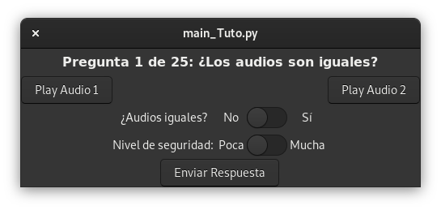

Terminé mi PFM... ¿y ahora qué?
Hace unos pocos días terminé mi Proyecto Final de Master (PFM). La verdad es que se alargó más de la cuenta, pero ya está, terminado y deseando empezar una nueva etapa. Una de las cosas que más me han preguntado desde que empecé con el trabajo es el qué pasaría cuando lo terminara. Para mí, un proyecto sólo ha sido provechoso si a alguien que no sea yo le puede resultar útil y, por ese motivo, he decidido publicar un repositorio público en mi cuenta de Github.
En ese enlace, además de alguna que otra chorrada, tenéis acceso a la memoria completa de mi PFM. Seguramente no sea la lectura más ligera del mundo, pero siempre he intentado que mis textos estén en ese sutil equilibrio entre el rigor y la facilidad de lectura. El documento es útil para saber qué he hecho, pero también entender la parte que, creo, es más interesante: la aplicación.
La aplicación es un pequeño programa en Python que permite realizar la escucha de archivos de audio para realizar test perceptuales mediante procedimiento binomial (Si/No). Incluye una pantalla inicial que sirve como entrenamiento previo por parte de los participantes.
En la carpeta "App" se encuentran los archivos escritos en Python y también el archivo ".glade" (la interfaz gráfica), por lo que podéis descargarlo y hacer cualquier modificación. Yo mismo estoy trabajando en realizar mejoras para que sirva para otros tipos de test y poder cargar diferentes audios sin necesidad de introducirlos modificando el código. Estos avances aparecerán en este repositorio.
Podeís ver los cambios en el siguiente repositorio. Cualquier error o sugerencia, ¡comentadla ahí!
Volver a la página principal.